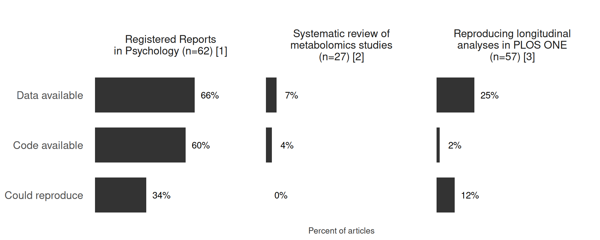
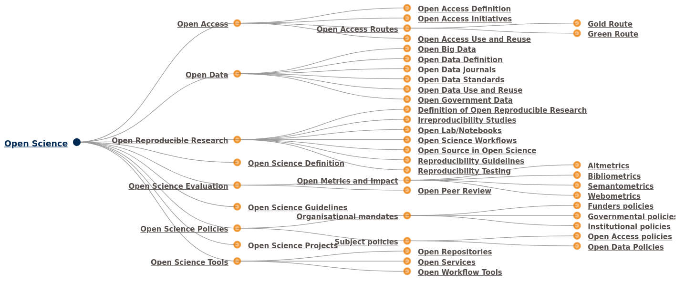

Open Science in Health: Practical perspectives and actions toward openness
Luke W. Johnston
October 26, 2023
Who am I? 👋

- Team Leader at Steno Diabetes Center Aarhus and Aarhus University, Denmark
- Research/work:
- Teach how to do open and reproducible science
- Build software to automate research
- Do epidemiological research
Objectives: A practical perspective
Main objectives:
- Focus on a very practical view to doing it
- Doing open science is hard work
- Provide time to reflect, share, and discuss
Learning objectives:
- Reflect (and share) on your own current workflows and tools
- How to implement these changes: Barriers and benefits
- Hear from others’ experiences and their thoughts
A quick review of Open Science, from a practical view
Open Science is a massive concept with a massive ecosystem

All the different “open” components of Open Science. Source: Foster Open Science
Open science is a spectrum, something is better than nothing
Reality: We don’t share as much as we should
Think 💭, then share 💬
~4 min: How exactly do you work? Consider these questions:
- Where do you save your files? How do you name them?
- What apps do you use for work tasks?
- How do you collaborate and coordinate with others? Email? Shared folders?
- For ~2 min, to yourself, think about the questions.
- For ~2 min, share your thoughts with the person next to you.
Think 💭, then share 💬
~5 min: How might the way you work hinder or help you with open science?
- For ~1 min, to yourself, think about the question.
- For ~2 min, share with the person next to you.
- For ~2 min, we’ll discuss as a group.
A quick review of Barriers and Benefits, from a practical view
Multiple benefits, from personal to philosophical
- It’s a core principle of the scientific method: Verification
- Learning more from others: For PhD students to senior researchers
- More exposure and visibility: More output to show and be seen
- So few are doing open science, this is a great niche!
- Easier and quicker collaboration (aside from the learning part)
- Finding better opportunities outside of academia
Strong instutional barriers, such as …
Lack of adequate awareness, support, infrastructure, training
Research culture values publications over all else
What would you spend your time on if we didn’t have this publication-obsession?
Legal and privacy concerns about sharing data, intellectual property protection, patents
Strong personal barriers like …
Fear of …
- Fear of being scooped or ideas being stolen
- Errors and public humiliation
Overwhelmed with everything that we should do better
Need to constantly stay updated
Think 💭, then share 💬
~5 min: Think of your own current working environment. What would be some practical benefits to yourself and your group to practicing open science?
For ~1 min, to yourself, think about the question
For ~2 min, share with the person next to you
For ~2 min, we’ll have a group-wide sharing of some of the thoughts
Think 💭, then share 💬
~5 min: Think of your own current working environment. What would be some basic challenges or barriers to yourself and your group to practicing open science?
For ~1 min, to yourself, think about the question.
For ~2 min, share with the person next to you
For ~2 min, we’ll have a group-wide sharing of some of the thoughts
Practical tips for being more open in your research
Some core principles
Use open source tools wherever possible
Use plain text as often as possible
Upload and share publicly early and often
Upload and share publicly as many things as possible
Archive to get a DOI/version for major milestones
Core tools and services to help be more open
| Task | Tool/service |
|---|---|
| Reproducible papers | Markdown tools like Quarto |
| Track changes to files and version them | Git (software) |
| Share content like text or code | GitHub (service) |
| Conduct analysis or do programming | R or Python |
| Archive a milestone, like first submission | Zenodo or OSF |
Potential social actions to use to be more open
- Do code/paper reviews through through GitHub
- Instead of emailing documents around, send links a GitHub repository
- Require writing everything in Markdown
- Run (in)formal training sessions for learning R/Python
- Agree on a standard folder and file structure for projects
- Require papers be uploaded to an archive before submission to a journal
Think 💭, then share 💬
~6 minutes: What are some ways you could personally change or improve your work to start following more open scientific principles?
For ~1 min, to yourself, think about the questions
For ~2 min, share your thoughts with the person next to you
For ~3 min, we’ll have a group-wide sharing of some of the thoughts
Brainstorm 🌩️, then share 💬
~6 minutes: What are some possible actions you and your research group could practically do relatively easily and within the short-term (<6 months) to be more open?
For ~3 min, brainstorm with the person next to you on possible actions to take
For ~3 min, we’ll briefly go over and discuss some of the ideas
Examples from my work for inspiration
Reproducible Research in R courses
Main page at r-cubed.rostools.org
Introductory course: r-cubed-intro.rostools.org
Intermediate course: r-cubed-intermediate.rostools.org
Advanced course: r-cubed-advanced.rostools.org
Collaborative UK Biobank project at Steno
Scoping review on current literature on open collaboration
Slides and posters
PhD thesis and papers
Summary and take home messages
- Write and publish a study’s protocol before the analysis is done
- Use plain text to write (Markdown), e.g. with Quarto
- Use open source analysis software (R, Python)
- Use Git/version control
- Share content (text and code) through Git hosting sites like GitHub
- Use DOI archiving services like Zenodo or OSF
Extra resources for learning
Licensed under CC-BY 4.0.
Slides at slides.lwjohnst.com